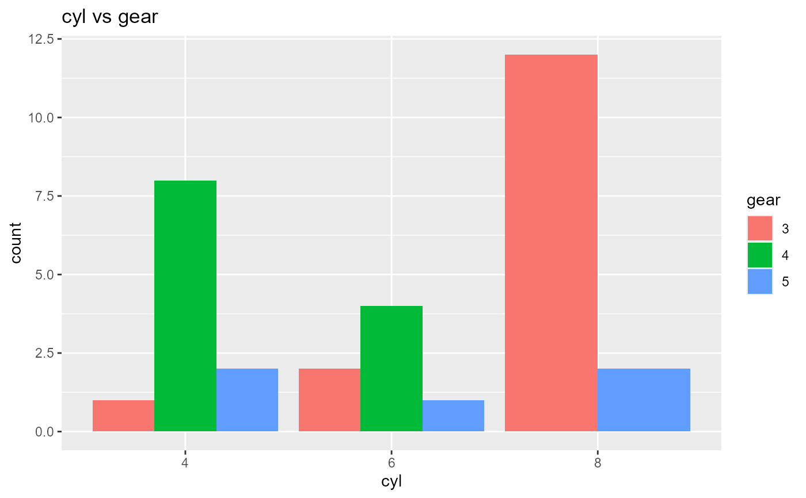
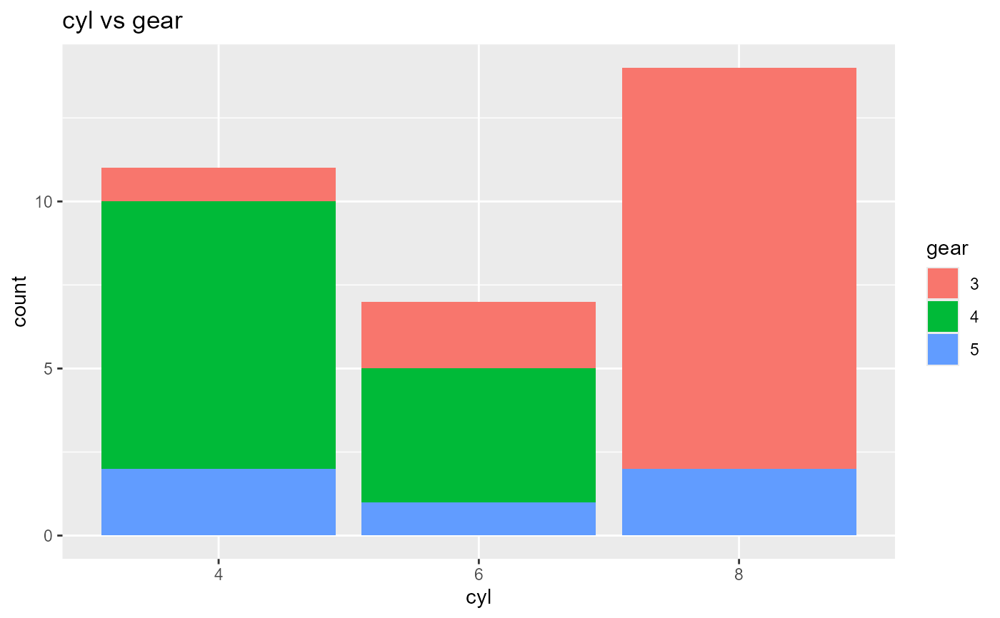

Two way table
Creates two way tables of categorical variables. The tables created can be visualized as barplots and mosaicplots.
ds_cross_table(data, var1, var2) # S3 method for ds_cross_table plot(x, stacked = FALSE, proportional = FALSE, ...)
Arguments
| data | A |
|---|---|
| var1 | First categorical variable. |
| var2 | Second categorical variable. |
| x | An object of class |
| stacked | If |
| proportional | If |
| ... | Further arguments to be passed to or from methods. |
Value
ds_cross_table returns an object of class "ds_cross_table".
An object of class "ds_cross_table" is a list containing at least the
following components:
Number of observations.
Levels of the second categorical variable.
Levels of the first categorical variable.
Names of the variables.
Table of the variables.
Table of percentages.
Table of row percentages.
Table of column percentages.
Total of columns.
Total of columns as a percentage.
Deprecated function
ds_cross_table() has been deprecated. Instead use
ds_cross_table().
Examples
k <- ds_cross_table(mtcarz, cyl, am) k#> Cell Contents #> |---------------| #> | Frequency | #> | Percent | #> | Row Pct | #> | Col Pct | #> |---------------| #> #> Total Observations: 32 #> #> ------------------------------------------------------------- #> | | am | #> ------------------------------------------------------------- #> | cyl | 0 | 1 | Row Total | #> ------------------------------------------------------------- #> | 4 | 3 | 8 | 11 | #> | | 0.094 | 0.25 | | #> | | 0.27 | 0.73 | 0.34 | #> | | 0.16 | 0.62 | | #> ------------------------------------------------------------- #> | 6 | 4 | 3 | 7 | #> | | 0.125 | 0.094 | | #> | | 0.57 | 0.43 | 0.22 | #> | | 0.21 | 0.23 | | #> ------------------------------------------------------------- #> | 8 | 12 | 2 | 14 | #> | | 0.375 | 0.062 | | #> | | 0.86 | 0.14 | 0.44 | #> | | 0.63 | 0.15 | | #> ------------------------------------------------------------- #> | Column Total | 19 | 13 | 32 | #> | | 0.594 | 0.406 | | #> -------------------------------------------------------------# bar plots plot(k)plot(k, stacked = TRUE)plot(k, proportional = TRUE)